2D Plotting¶
Sage provides extensive 2D plotting functionality. The underlying rendering is done using the matplotlib Python library.
The following graphics primitives are supported:
arrow()- an arrow from a min point to a max point.circle()- a circle with given radiusellipse()- an ellipse with given radii and anglearc()- an arc of a circle or an ellipsedisk()- a filled disk (i.e. a sector or wedge of a circle)line()- a line determined by a sequence of points (this need not be straight!)point()- a pointtext()- some textpolygon()- a filled polygon
The following plotting functions are supported:
plot()- plot of a function or other Sage object (e.g., elliptic curve).parametric_plot()implicit_plot()polar_plot()region_plot()list_plot()scatter_plot()bar_chart()contour_plot()density_plot()plot_vector_field()plot_slope_field()matrix_plot()complex_plot()graphics_array()multi_graphics()- The following log plotting functions:
The following miscellaneous Graphics functions are included:
Type ? after each primitive in Sage for help and examples.
EXAMPLES:
We draw a curve:
sage: plot(x^2, (x,0,5))
Graphics object consisting of 1 graphics primitive
We draw a circle and a curve:
sage: circle((1,1), 1) + plot(x^2, (x,0,5))
Graphics object consisting of 2 graphics primitives
Notice that the aspect ratio of the above plot makes the plot very tall because the plot adopts the default aspect ratio of the circle (to make the circle appear like a circle). We can change the aspect ratio to be what we normally expect for a plot by explicitly asking for an ‘automatic’ aspect ratio:
sage: show(circle((1,1), 1) + plot(x^2, (x,0,5)), aspect_ratio='automatic')
The aspect ratio describes the apparently height/width ratio of a unit square. If you want the vertical units to be twice as big as the horizontal units, specify an aspect ratio of 2:
sage: show(circle((1,1), 1) + plot(x^2, (x,0,5)), aspect_ratio=2)
The figsize option adjusts the figure size. The default figsize is
4. To make a figure that is roughly twice as big, use figsize=8:
sage: show(circle((1,1), 1) + plot(x^2, (x,0,5)), figsize=8)
You can also give separate horizontal and vertical dimensions. Both will be measured in inches:
sage: show(circle((1,1), 1) + plot(x^2, (x,0,5)), figsize=[4,8])
However, do not make the figsize too big (e.g. one dimension greater
than 327 or both in the mid-200s) as this will lead to errors or crashes.
See show() for full details.
Note that the axes will not cross if the data is not on both sides of both axes, even if it is quite close:
sage: plot(x^3, (x,1,10))
Graphics object consisting of 1 graphics primitive
When the labels have quite different orders of magnitude or are very large, scientific notation (the \(e\) notation for powers of ten) is used:
sage: plot(x^2, (x,480,500)) # no scientific notation
Graphics object consisting of 1 graphics primitive
sage: plot(x^2, (x,300,500)) # scientific notation on y-axis
Graphics object consisting of 1 graphics primitive
But you can fix your own tick labels, if you know what to expect and have a preference:
sage: plot(x^2, (x,300,500), ticks=[100,50000])
Graphics object consisting of 1 graphics primitive
To change the ticks on one axis only, use the following notation:
sage: plot(x^2, (x,300,500), ticks=[None,50000])
Graphics object consisting of 1 graphics primitive
You can even have custom tick labels along with custom positioning.
sage: plot(x^2, (x,0,3), ticks=[[1,2.5],pi/2], tick_formatter=[["$x_1$","$x_2$"],pi]) # long time
Graphics object consisting of 1 graphics primitive
We construct a plot involving several graphics objects:
sage: G = plot(cos(x), (x, -5, 5), thickness=5, color='green', title='A plot')
sage: P = polygon([[1,2], [5,6], [5,0]], color='red')
sage: G + P
Graphics object consisting of 2 graphics primitives
Next we construct the reflection of the above polygon about the
\(y\)-axis by iterating over the list of first-coordinates of
the first graphic element of P (which is the actual
Polygon; note that P is a Graphics object, which consists
of a single polygon):
sage: Q = polygon([(-x,y) for x,y in P[0]], color='blue')
sage: Q # show it
Graphics object consisting of 1 graphics primitive
We combine together different graphics objects using “+”:
sage: H = G + P + Q
sage: print(H)
Graphics object consisting of 3 graphics primitives
sage: type(H)
<class 'sage.plot.graphics.Graphics'>
sage: H[1]
Polygon defined by 3 points
sage: list(H[1])
[(1.0, 2.0), (5.0, 6.0), (5.0, 0.0)]
sage: H # show it
Graphics object consisting of 3 graphics primitives
We can put text in a graph:
sage: L = [[cos(pi*i/100)^3,sin(pi*i/100)] for i in range(200)]
sage: p = line(L, rgbcolor=(1/4,1/8,3/4))
sage: tt = text('A Bulb', (1.5, 0.25))
sage: tx = text('x axis', (1.5,-0.2))
sage: ty = text('y axis', (0.4,0.9))
sage: g = p + tt + tx + ty
sage: g.show(xmin=-1.5, xmax=2, ymin=-1, ymax=1)
We can add a graphics object to another one as an inset:
sage: g1 = plot(x^2*sin(1/x), (x, -2, 2), axes_labels=['$x$', '$y$'])
sage: g2 = plot(x^2*sin(1/x), (x, -0.3, 0.3), axes_labels=['$x$', '$y$'],
....: frame=True)
sage: g1.inset(g2, pos=(0.15, 0.7, 0.25, 0.25))
Multigraphics with 2 elements
We can add a title to a graph:
sage: plot(x^2, (x,-2,2), title='A plot of $x^2$')
Graphics object consisting of 1 graphics primitive

We can set the position of the title:
sage: plot(x^2, (-2,2), title='Plot of $x^2$', title_pos=(0.5,-0.05))
Graphics object consisting of 1 graphics primitive
We plot the Riemann zeta function along the critical line and see the first few zeros:
sage: i = CDF.0 # define i this way for maximum speed.
sage: p1 = plot(lambda t: arg(zeta(0.5+t*i)), 1, 27, rgbcolor=(0.8,0,0))
sage: p2 = plot(lambda t: abs(zeta(0.5+t*i)), 1, 27, color=hue(0.7))
sage: print(p1 + p2)
Graphics object consisting of 2 graphics primitives
sage: p1 + p2 # display it
Graphics object consisting of 2 graphics primitives
Note
Not all functions in Sage are symbolic. When plotting non-symbolic functions
they should be wrapped in lambda:
sage: plot(lambda x:fibonacci(round(x)), (x,1,10))
Graphics object consisting of 1 graphics primitive
Many concentric circles shrinking toward the origin:
sage: show(sum(circle((i,0), i, hue=sin(i/10)) for i in [10,9.9,..,0])) # long time
Here is a pretty graph:
sage: g = Graphics()
sage: for i in range(60):
....: p = polygon([(i*cos(i),i*sin(i)), (0,i), (i,0)],\
....: color=hue(i/40+0.4), alpha=0.2)
....: g = g + p
sage: g.show(dpi=200, axes=False)
Another graph:
sage: x = var('x')
sage: P = plot(sin(x)/x, -4, 4, color='blue') + \
....: plot(x*cos(x), -4, 4, color='red') + \
....: plot(tan(x), -4, 4, color='green')
sage: P.show(ymin=-pi, ymax=pi)
PYX EXAMPLES: These are some examples of plots similar to some of the plots in the PyX (http://pyx.sourceforge.net) documentation:
Symbolline:
sage: y(x) = x*sin(x^2)
sage: v = [(x, y(x)) for x in [-3,-2.95,..,3]]
sage: show(points(v, rgbcolor=(0.2,0.6, 0.1), pointsize=30) + plot(spline(v), -3.1, 3))
Cycliclink:
sage: g1 = plot(cos(20*x)*exp(-2*x), 0, 1)
sage: g2 = plot(2*exp(-30*x) - exp(-3*x), 0, 1)
sage: show(graphics_array([g1, g2], 2, 1))
Pi Axis:
sage: g1 = plot(sin(x), 0, 2*pi)
sage: g2 = plot(cos(x), 0, 2*pi, linestyle="--")
sage: (g1+g2).show(ticks=pi/6, tick_formatter=pi) # long time # show their sum, nicely formatted
An illustration of integration:
sage: f(x) = (x-3)*(x-5)*(x-7)+40
sage: P = line([(2,0),(2,f(2))], color='black')
sage: P += line([(8,0),(8,f(8))], color='black')
sage: P += polygon([(2,0),(2,f(2))] + [(x, f(x)) for x in [2,2.1,..,8]] + [(8,0),(2,0)], rgbcolor=(0.8,0.8,0.8),aspect_ratio='automatic')
sage: P += text("$\\int_{a}^b f(x) dx$", (5, 20), fontsize=16, color='black')
sage: P += plot(f, (1, 8.5), thickness=3)
sage: P # show the result
Graphics object consisting of 5 graphics primitives
NUMERICAL PLOTTING:
Sage includes Matplotlib, which provides 2D plotting with an interface
that is a likely very familiar to people doing numerical
computation.
You can use plt.clf() to clear the current image frame
and plt.close() to close it.
For example,
sage: import pylab as plt
sage: t = plt.arange(0.0, 2.0, 0.01)
sage: s = sin(2*pi*t)
sage: P = plt.plot(t, s, linewidth=1.0)
sage: xl = plt.xlabel('time (s)')
sage: yl = plt.ylabel('voltage (mV)')
sage: t = plt.title('About as simple as it gets, folks')
sage: plt.grid(True)
sage: plt.savefig(os.path.join(SAGE_TMP, 'sage.png'))
sage: plt.clf()
sage: plt.savefig(os.path.join(SAGE_TMP, 'blank.png'))
sage: plt.close()
sage: plt.imshow([[1,2],[0,1]])
<matplotlib.image.AxesImage object at ...>
We test that imshow works as well, verifying that
trac ticket #2900 is fixed (in Matplotlib).
sage: plt.imshow([[(0.0,0.0,0.0)]])
<matplotlib.image.AxesImage object at ...>
sage: plt.savefig(os.path.join(SAGE_TMP, 'foo.png'))
Since the above overwrites many Sage plotting functions, we reset the state of Sage, so that the examples below work!
sage: reset()
See http://matplotlib.sourceforge.net for complete documentation about how to use Matplotlib.
AUTHORS:
- Alex Clemesha and William Stein (2006-04-10): initial version
- David Joyner: examples
- Alex Clemesha (2006-05-04) major update
- William Stein (2006-05-29): fine tuning, bug fixes, better server integration
- William Stein (2006-07-01): misc polish
- Alex Clemesha (2006-09-29): added contour_plot, frame axes, misc polishing
- Robert Miller (2006-10-30): tuning, NetworkX primitive
- Alex Clemesha (2006-11-25): added plot_vector_field, matrix_plot, arrow, bar_chart, Axes class usage (see axes.py)
- Bobby Moretti and William Stein (2008-01): Change plot to specify ranges using the (varname, min, max) notation.
- William Stein (2008-01-19): raised the documentation coverage from a miserable 12 percent to a ‘wopping’ 35 percent, and fixed and clarified numerous small issues.
- Jason Grout (2009-09-05): shifted axes and grid functionality over to matplotlib; fixed a number of smaller issues.
- Jason Grout (2010-10): rewrote aspect ratio portions of the code
- Jeroen Demeyer (2012-04-19): move parts of this file to graphics.py (trac ticket #12857)
- Aaron Lauve (2016-07-13): reworked handling of ‘color’ when passed a list of functions; now more in-line with other CAS’s. Added list functionality to linestyle and legend_label options as well. (trac ticket #12962)
- Eric Gourgoulhon (2019-04-24): add
multi_graphics()and insets
-
sage.plot.plot.SelectiveFormatter(formatter, skip_values)¶ This matplotlib formatter selectively omits some tick values and passes the rest on to a specified formatter.
EXAMPLES:
This example is almost straight from a matplotlib example.
sage: from sage.plot.plot import SelectiveFormatter sage: import matplotlib.pyplot as plt sage: import numpy sage: fig=plt.figure() sage: ax=fig.add_subplot(111) sage: t = numpy.arange(0.0, 2.0, 0.01) sage: s = numpy.sin(2*numpy.pi*t) sage: p = ax.plot(t, s) sage: formatter=SelectiveFormatter(ax.xaxis.get_major_formatter(),skip_values=[0,1]) sage: ax.xaxis.set_major_formatter(formatter) sage: fig.savefig(os.path.join(SAGE_TMP, 'test.png'))
-
sage.plot.plot.adaptive_refinement(f, p1, p2, adaptive_tolerance=0.01, adaptive_recursion=5, level=0)¶ The adaptive refinement algorithm for plotting a function
f. See the docstring for plot for a description of the algorithm.INPUT:
f- a function of one variablep1, p2- two points to refine betweenadaptive_recursion- (default: 5) how many levels of recursion to go before giving up when doing adaptive refinement. Setting this to 0 disables adaptive refinement.adaptive_tolerance- (default: 0.01) how large a relative difference should be before the adaptive refinement code considers it significant; see documentation for generate_plot_points for more information. See the documentation forplot()for more information on how the adaptive refinement algorithm works.
OUTPUT:
list- a list of points to insert betweenp1andp2to get a better linear approximation between them
-
sage.plot.plot.generate_plot_points(f, xrange, plot_points=5, adaptive_tolerance=0.01, adaptive_recursion=5, randomize=True, initial_points=None)¶ Calculate plot points for a function f in the interval xrange. The adaptive refinement algorithm is also automatically invoked with a relative adaptive tolerance of adaptive_tolerance; see below.
INPUT:
f- a function of one variablep1, p2- two points to refine betweenplot_points- (default: 5) the minimal number of plot points. (Note however that in any actual plot a number is passed to this, with default value 200.)adaptive_recursion- (default: 5) how many levels of recursion to go before giving up when doing adaptive refinement. Setting this to 0 disables adaptive refinement.adaptive_tolerance- (default: 0.01) how large the relative difference should be before the adaptive refinement code considers it significant. If the actual difference is greater than adaptive_tolerance*delta, where delta is the initial subinterval size for the given xrange and plot_points, then the algorithm will consider it significant.initial_points- (default: None) a list of points that should be evaluated.
OUTPUT:
- a list of points (x, f(x)) in the interval xrange, which approximate the function f.
-
sage.plot.plot.graphics_array(array, nrows=None, ncols=None)¶ Plot a list of lists (or tuples) of graphics objects on one canvas, arranged as an array.
INPUT:
array– either a list of lists ofGraphicselements or a single list ofGraphicselementsnrows, ncols– (optional) integers. If both are given then the input array is flattened and turned into annrowsxncolsarray, with blank graphics objects padded at the end, if necessary. If only one is specified, the other is chosen automatically.
OUTPUT:
- instance of
GraphicsArray
EXAMPLES: Make some plots of \(\sin\) functions:
sage: f(x) = sin(x) sage: g(x) = sin(2*x) sage: h(x) = sin(4*x) sage: p1 = plot(f, (-2*pi,2*pi), color=hue(0.5)) # long time sage: p2 = plot(g, (-2*pi,2*pi), color=hue(0.9)) # long time sage: p3 = parametric_plot((f,g), (0,2*pi), color=hue(0.6)) # long time sage: p4 = parametric_plot((f,h), (0,2*pi), color=hue(1.0)) # long time
Now make a graphics array out of the plots:
sage: graphics_array(((p1,p2), (p3,p4))) # long time Graphics Array of size 2 x 2
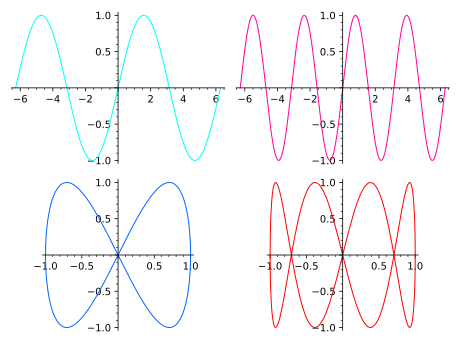One can also name the array, and then use
show()orsave():sage: ga = graphics_array(((p1,p2), (p3,p4))) # long time sage: ga.show() # long time; same output as above
Here we give only one row:
sage: p1 = plot(sin,(-4,4)) sage: p2 = plot(cos,(-4,4)) sage: ga = graphics_array([p1, p2]) sage: ga Graphics Array of size 1 x 2 sage: ga.show()

It is possible to use
figsizeto change the size of the plot as a whole:sage: L = [plot(sin(k*x), (x,-pi,pi)) for k in [1..3]] sage: ga = graphics_array(L) sage: ga.show(figsize=[5,3]) # smallish and compact
sage: ga.show(figsize=[5,7]) # tall and thin; long time
sage: ga.show(figsize=4) # width=4 inches, height fixed from default aspect ratio
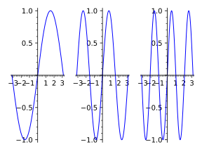Specifying only the number of rows or the number of columns computes the other dimension automatically:
sage: ga = graphics_array([plot(sin)] * 10, nrows=3) sage: ga.nrows(), ga.ncols() (3, 4) sage: ga = graphics_array([plot(sin)] * 10, ncols=3) sage: ga.nrows(), ga.ncols() (4, 3) sage: ga = graphics_array([plot(sin)] * 4, nrows=2) sage: ga.nrows(), ga.ncols() (2, 2) sage: ga = graphics_array([plot(sin)] * 6, ncols=2) sage: ga.nrows(), ga.ncols() (3, 2)
The options like
fontsize,scaleorframepassed to individual plots are preserved:sage: p1 = plot(sin(x^2), (x, 0, 6), ....: axes_labels=[r'$\theta$', r'$\sin(\theta^2)$'], fontsize=16) sage: p2 = plot(x^3, (x, 1, 100), axes_labels=[r'$x$', r'$y$'], ....: scale='semilogy', frame=True, gridlines='minor') sage: ga = graphics_array([p1, p2]) sage: ga.show()
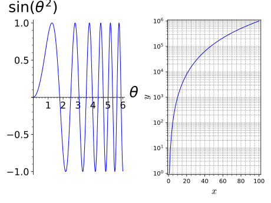See also
GraphicsArrayfor more examples
-
sage.plot.plot.list_plot(data, plotjoined=False, aspect_ratio='automatic', **kwargs)¶ list_plottakes either a list of numbers, a list of tuples, a numpy array, or a dictionary and plots the corresponding points.If given a list of numbers (that is, not a list of tuples or lists),
list_plotforms a list of tuples(i, x_i)whereigoes from 0 tolen(data)-1andx_iis thei-th data value, and puts points at those tuple values.list_plotwill plot a list of complex numbers in the obvious way; any numbers for whichCC()makes sense will work.list_plotalso takes a list of tuples(x_i, y_i)wherex_iandy_iare thei-th values representing thex- andy-values, respectively.If given a dictionary,
list_plotinterprets the keys as \(x\)-values and the values as \(y\)-values.The
plotjoined=Trueoption tellslist_plotto plot a line joining all the data.For other keyword options that the
list_plotfunction can take, refer toplot().It is possible to pass empty dictionaries, lists, or tuples to
list_plot. Doing so will plot nothing (returning an empty plot).EXAMPLES:
sage: list_plot([i^2 for i in range(5)]) # long time Graphics object consisting of 1 graphics primitive
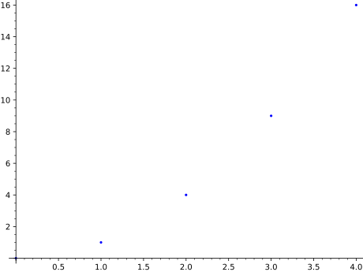Here are a bunch of random red points:
sage: r = [(random(),random()) for _ in range(20)] sage: list_plot(r, color='red') Graphics object consisting of 1 graphics primitive
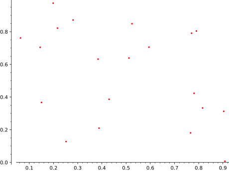This gives all the random points joined in a purple line:
sage: list_plot(r, plotjoined=True, color='purple') Graphics object consisting of 1 graphics primitive
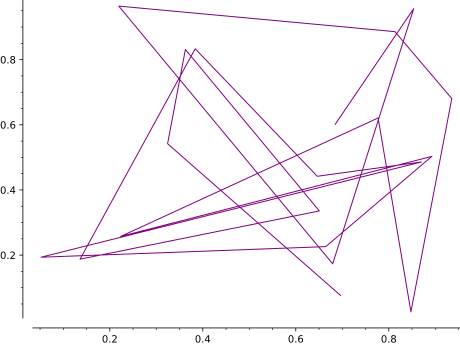You can provide a numpy array.:
sage: import numpy sage: list_plot(numpy.arange(10)) Graphics object consisting of 1 graphics primitive
sage: list_plot(numpy.array([[1,2], [2,3], [3,4]])) Graphics object consisting of 1 graphics primitive
Plot a list of complex numbers:
sage: list_plot([1, I, pi + I/2, CC(.25, .25)]) Graphics object consisting of 1 graphics primitive
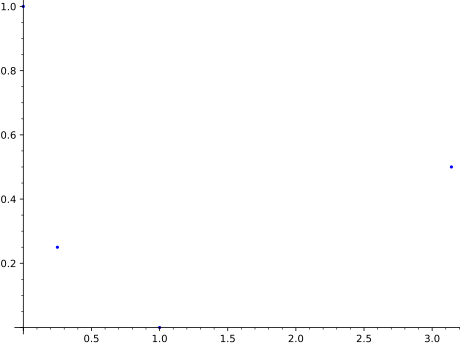sage: list_plot([exp(I*theta) for theta in [0, .2..pi]]) Graphics object consisting of 1 graphics primitive
Note that if your list of complex numbers are all actually real, they get plotted as real values, so this
sage: list_plot([CDF(1), CDF(1/2), CDF(1/3)]) Graphics object consisting of 1 graphics primitive
is the same as
list_plot([1, 1/2, 1/3])– it produces a plot of the points \((0,1)\), \((1,1/2)\), and \((2,1/3)\).If you have separate lists of \(x\) values and \(y\) values which you want to plot against each other, use the
zipcommand to make a single list whose entries are pairs of \((x,y)\) values, and feed the result intolist_plot:sage: x_coords = [cos(t)^3 for t in srange(0, 2*pi, 0.02)] sage: y_coords = [sin(t)^3 for t in srange(0, 2*pi, 0.02)] sage: list_plot(list(zip(x_coords, y_coords))) Graphics object consisting of 1 graphics primitive
If instead you try to pass the two lists as separate arguments, you will get an error message:
sage: list_plot(x_coords, y_coords) Traceback (most recent call last): ... TypeError: The second argument 'plotjoined' should be boolean (True or False). If you meant to plot two lists 'x' and 'y' against each other, use 'list_plot(list(zip(x,y)))'.
Dictionaries with numeric keys and values can be plotted:
sage: list_plot({22: 3365, 27: 3295, 37: 3135, 42: 3020, 47: 2880, 52: 2735, 57: 2550}) Graphics object consisting of 1 graphics primitive
Plotting in logarithmic scale is possible for 2D list plots. There are two different syntaxes available:
sage: yl = [2**k for k in range(20)] sage: list_plot(yl, scale='semilogy') # long time # log axis on vertical Graphics object consisting of 1 graphics primitive
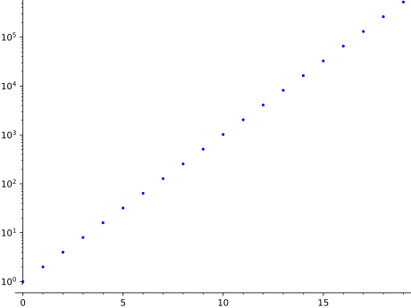sage: list_plot_semilogy(yl) # same Graphics object consisting of 1 graphics primitive
Warning
If
plotjoinedisFalsethen the axis that is in log scale must have all points strictly positive. For instance, the following plot will show no points in the figure since the points in the horizontal axis starts from \((0,1)\). Further, matplotlib will display a user warning.sage: list_plot(yl, scale='loglog') # both axes are log doctest:warning ... Graphics object consisting of 1 graphics primitive
Instead this will work. We drop the point \((0,1)\).:
sage: list_plot(list(zip(range(1,len(yl)), yl[1:])), scale='loglog') # long time Graphics object consisting of 1 graphics primitive
We use
list_plot_loglog()and plot in a different base.:sage: list_plot_loglog(list(zip(range(1,len(yl)), yl[1:])), base=2) # long time Graphics object consisting of 1 graphics primitive
We can also change the scale of the axes in the graphics just before displaying:
sage: G = list_plot(yl) # long time sage: G.show(scale=('semilogy', 2)) # long time
-
sage.plot.plot.list_plot_loglog(data, plotjoined=False, base=10, **kwds)¶ Plot the
datain ‘loglog’ scale, that is, both the horizontal and the vertical axes will be in logarithmic scale.INPUT:
base– (default: 10) the base of the logarithm. This must be greater than 1. The base can be also given as a list or tuple(basex, basey).basexsets the base of the logarithm along the horizontal axis andbaseysets the base along the vertical axis.
For all other inputs, look at the documentation of
list_plot().EXAMPLES:
sage: yl = [5**k for k in range(10)]; xl = [2**k for k in range(10)] sage: list_plot_loglog(list(zip(xl, yl))) # long time # plot in loglog scale with base 10 Graphics object consisting of 1 graphics primitive
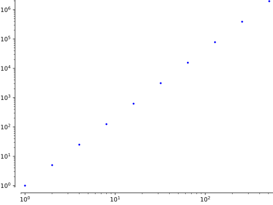sage: list_plot_loglog(list(zip(xl, yl)), base=2.1) # long time # with base 2.1 on both axes Graphics object consisting of 1 graphics primitive
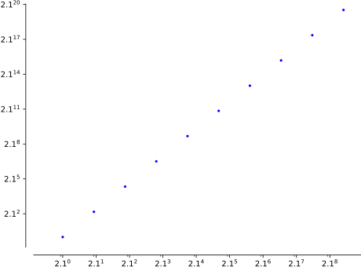sage: list_plot_loglog(list(zip(xl, yl)), base=(2,5)) # long time Graphics object consisting of 1 graphics primitive
Warning
If
plotjoinedisFalsethen the axis that is in log scale must have all points strictly positive. For instance, the following plot will show no points in the figure since the points in the horizontal axis starts from \((0,1)\).sage: yl = [2**k for k in range(20)] sage: list_plot_loglog(yl) Graphics object consisting of 1 graphics primitive
Instead this will work. We drop the point \((0,1)\).:
sage: list_plot_loglog(list(zip(range(1,len(yl)), yl[1:]))) Graphics object consisting of 1 graphics primitive
-
sage.plot.plot.list_plot_semilogx(data, plotjoined=False, base=10, **kwds)¶ Plot
datain ‘semilogx’ scale, that is, the horizontal axis will be in logarithmic scale.INPUT:
base– (default: 10) the base of the logarithm. This must be greater than 1.
For all other inputs, look at the documentation of
list_plot().EXAMPLES:
sage: yl = [2**k for k in range(12)] sage: list_plot_semilogx(list(zip(yl,yl))) Graphics object consisting of 1 graphics primitive
Warning
If
plotjoinedisFalsethen the horizontal axis must have all points strictly positive. Otherwise the plot will come up empty. For instance the following plot contains a point at \((0,1)\).sage: yl = [2**k for k in range(12)] sage: list_plot_semilogx(yl) # plot empty due to (0,1) Graphics object consisting of 1 graphics primitive
We remove \((0,1)\) to fix this.:
sage: list_plot_semilogx(list(zip(range(1, len(yl)), yl[1:]))) Graphics object consisting of 1 graphics primitive
sage: list_plot_semilogx([(1,2),(3,4),(3,-1),(25,3)], base=2) # with base 2 Graphics object consisting of 1 graphics primitive
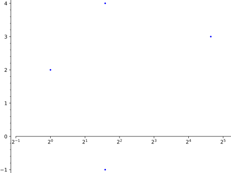
-
sage.plot.plot.list_plot_semilogy(data, plotjoined=False, base=10, **kwds)¶ Plot
datain ‘semilogy’ scale, that is, the vertical axis will be in logarithmic scale.INPUT:
base– (default: 10) the base of the logarithm. This must be greater than 1.
For all other inputs, look at the documentation of
list_plot().EXAMPLES:
sage: yl = [2**k for k in range(12)] sage: list_plot_semilogy(yl) # plot in semilogy scale, base 10 Graphics object consisting of 1 graphics primitive

Warning
If
plotjoinedisFalsethen the vertical axis must have all points strictly positive. Otherwise the plot will come up empty. For instance the following plot contains a point at \((1,0)\). Further, matplotlib will display a user warning.sage: xl = [2**k for k in range(12)]; yl = range(len(xl)) sage: list_plot_semilogy(list(zip(xl,yl))) # plot empty due to (1,0) doctest:warning ... Graphics object consisting of 1 graphics primitive
We remove \((1,0)\) to fix this.:
sage: list_plot_semilogy(list(zip(xl[1:],yl[1:]))) Graphics object consisting of 1 graphics primitive
sage: list_plot_semilogy([2, 4, 6, 8, 16, 31], base=2) # with base 2 Graphics object consisting of 1 graphics primitive
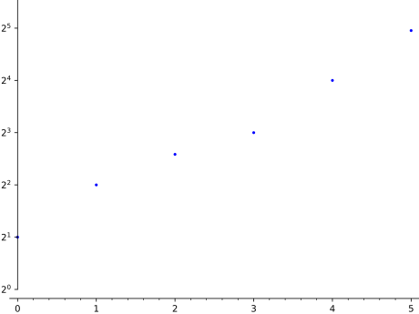
-
sage.plot.plot.minmax_data(xdata, ydata, dict=False)¶ Return the minimums and maximums of
xdataandydata.If dict is False, then minmax_data returns the tuple (xmin, xmax, ymin, ymax); otherwise, it returns a dictionary whose keys are ‘xmin’, ‘xmax’, ‘ymin’, and ‘ymax’ and whose values are the corresponding values.
EXAMPLES:
sage: from sage.plot.plot import minmax_data sage: minmax_data([], []) (-1, 1, -1, 1) sage: minmax_data([-1, 2], [4, -3]) (-1, 2, -3, 4) sage: minmax_data([1, 2], [4, -3]) (1, 2, -3, 4) sage: d = minmax_data([-1, 2], [4, -3], dict=True) sage: list(sorted(d.items())) [('xmax', 2), ('xmin', -1), ('ymax', 4), ('ymin', -3)] sage: d = minmax_data([1, 2], [3, 4], dict=True) sage: list(sorted(d.items())) [('xmax', 2), ('xmin', 1), ('ymax', 4), ('ymin', 3)]
-
sage.plot.plot.multi_graphics(graphics_list)¶ Plot a list of graphics at specified positions on a single canvas.
If the graphics positions define a regular array, use
graphics_array()instead.INPUT:
graphics_list– a list of graphics along with their positions on the canvas; each element ofgraphics_listis either- a pair
(graphics, position), wheregraphicsis aGraphicsobject andpositionis the 4-tuple(left, bottom, width, height)specifying the location and size of the graphics on the canvas, all quantities being in fractions of the canvas width and height - or a single
Graphicsobject; its position is then assumed to occupy the whole canvas, except for some padding; this corresponds to the default position(left, bottom, width, height) = (0.125, 0.11, 0.775, 0.77)
- a pair
OUTPUT:
- instance of
MultiGraphics
EXAMPLES:
multi_graphicsis to be used for plot arrangements that cannot be achieved withgraphics_array(), for instance:sage: g1 = plot(sin(x), (x, -10, 10), frame=True) sage: g2 = EllipticCurve([0,0,1,-1,0]).plot(color='red', thickness=2, ....: axes_labels=['$x$', '$y$']) \ ....: + text(r"$y^2 + y = x^3 - x$", (1.2, 2), color='red') sage: g3 = matrix_plot(matrix([[1,3,5,1], [2,4,5,6], [1,3,5,7]])) sage: G = multi_graphics([(g1, (0.125, 0.65, 0.775, 0.3)), ....: (g2, (0.125, 0.11, 0.4, 0.4)), ....: (g3, (0.55, 0.18, 0.4, 0.3))]) sage: G Multigraphics with 3 elements
An example with a list containing a graphics object without any specified position (the graphics, here
g3, occupies then the whole canvas):sage: G = multi_graphics([g3, (g1, (0.4, 0.4, 0.2, 0.2))]) sage: G Multigraphics with 2 elements
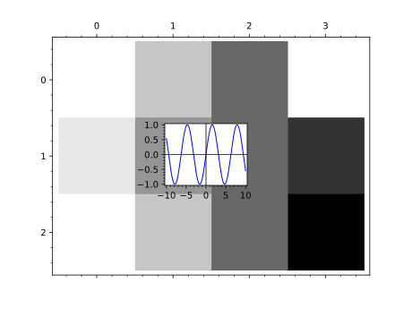See also
MultiGraphicsfor more examples
-
sage.plot.plot.parametric_plot(funcs, aspect_ratio=1.0, *args, **kwargs)¶ Plot a parametric curve or surface in 2d or 3d.
parametric_plot()takes two or three functions as a list or a tuple and makes a plot with the first function giving the \(x\) coordinates, the second function giving the \(y\) coordinates, and the third function (if present) giving the \(z\) coordinates.In the 2d case,
parametric_plot()is equivalent to theplot()command with the optionparametric=True. In the 3d case,parametric_plot()is equivalent toparametric_plot3d(). See each of these functions for more help and examples.INPUT:
funcs- 2 or 3-tuple of functions, or a vector of dimension 2 or 3.other options- passed toplot()orparametric_plot3d()
EXAMPLES: We draw some 2d parametric plots. Note that the default aspect ratio is 1, so that circles look like circles.
sage: t = var('t') sage: parametric_plot( (cos(t), sin(t)), (t, 0, 2*pi)) Graphics object consisting of 1 graphics primitive
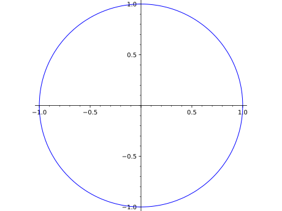sage: parametric_plot( (sin(t), sin(2*t)), (t, 0, 2*pi), color=hue(0.6) ) Graphics object consisting of 1 graphics primitive
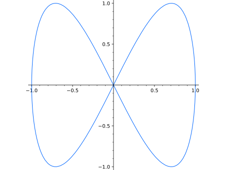sage: parametric_plot((1, t), (t, 0, 4)) Graphics object consisting of 1 graphics primitive
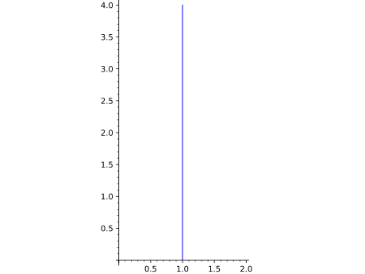Note that in parametric_plot, there is only fill or no fill.
sage: parametric_plot((t, t^2), (t, -4, 4), fill=True) Graphics object consisting of 2 graphics primitives
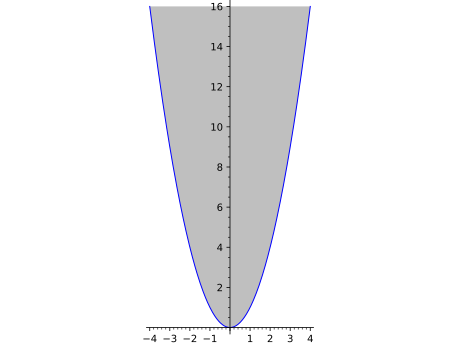A filled Hypotrochoid:
sage: parametric_plot([cos(x) + 2 * cos(x/4), sin(x) - 2 * sin(x/4)], (x,0, 8*pi), fill=True) Graphics object consisting of 2 graphics primitives

sage: parametric_plot( (5*cos(x), 5*sin(x), x), (x,-12, 12), plot_points=150, color="red") # long time Graphics3d Object
sage: y=var('y') sage: parametric_plot( (5*cos(x), x*y, cos(x*y)), (x, -4,4), (y,-4,4)) # long time` Graphics3d Object
sage: t=var('t') sage: parametric_plot( vector((sin(t), sin(2*t))), (t, 0, 2*pi), color='green') # long time Graphics object consisting of 1 graphics primitive
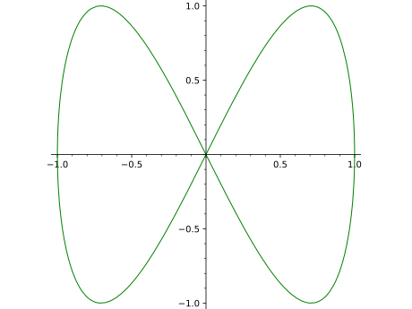sage: t = var('t') sage: parametric_plot( vector([t, t+1, t^2]), (t, 0, 1)) # long time Graphics3d Object
Plotting in logarithmic scale is possible with 2D plots. The keyword
aspect_ratiowill be ignored if the scale is not'loglog'or'linear'.:sage: parametric_plot((x, x**2), (x, 1, 10), scale='loglog') Graphics object consisting of 1 graphics primitive
We can also change the scale of the axes in the graphics just before displaying. In this case, the
aspect_ratiomust be specified as'automatic'if thescaleis set to'semilogx'or'semilogy'. For other values of thescaleparameter, anyaspect_ratiocan be used, or the keyword need not be provided.:sage: p = parametric_plot((x, x**2), (x, 1, 10)) sage: p.show(scale='semilogy', aspect_ratio='automatic')
-
sage.plot.plot.plot(funcs, alpha=1, thickness=1, fill=False, fillcolor='automatic', fillalpha=0.5, plot_points=200, adaptive_tolerance=0.01, adaptive_recursion=5, detect_poles=False, exclude=None, legend_label=None, aspect_ratio='automatic', *args, **kwds)¶ Use plot by writing
plot(X, ...)where \(X\) is a Sage object (or list of Sage objects) that either is callable and returns numbers that can be coerced to floats, or has a plot method that returns a
GraphicPrimitiveobject.There are many other specialized 2D plot commands available in Sage, such as
plot_slope_field, as well as various graphics primitives likeArrow; typesage.plot.plot?for a current list.Type
plot.optionsfor a dictionary of the default options for plots. You can change this to change the defaults for all future plots. Useplot.reset()to reset to the default options.PLOT OPTIONS:
plot_points- (default: 200) the minimal number of plot points.adaptive_recursion- (default: 5) how many levels of recursion to go before giving up when doing adaptive refinement. Setting this to 0 disables adaptive refinement.adaptive_tolerance- (default: 0.01) how large a difference should be before the adaptive refinement code considers it significant. See the documentation further below for more information, starting at “the algorithm used to insert”.base- (default: 10) the base of the logarithm if a logarithmic scale is set. This must be greater than 1. The base can be also given as a list or tuple(basex, basey).basexsets the base of the logarithm along the horizontal axis andbaseysets the base along the vertical axis.scale– (default:"linear") string. The scale of the axes. Possible values are"linear","loglog","semilogx","semilogy".The scale can be also be given as single argument that is a list or tuple
(scale, base)or(scale, basex, basey).The
"loglog"scale sets both the horizontal and vertical axes to logarithmic scale. The"semilogx"scale sets the horizontal axis to logarithmic scale. The"semilogy"scale sets the vertical axis to logarithmic scale. The"linear"scale is the default value whenGraphicsis initialized.xmin- starting x value in the rendered figure. This parameter is passed directly to theshowprocedure and it could be overwritten.xmax- ending x value in the rendered figure. This parameter is passed directly to theshowprocedure and it could be overwritten.ymin- starting y value in the rendered figure. This parameter is passed directly to theshowprocedure and it could be overwritten.ymax- ending y value in the rendered figure. This parameter is passed directly to theshowprocedure and it could be overwritten.detect_poles- (Default: False) If set to True poles are detected. If set to “show” vertical asymptotes are drawn.legend_label- a (TeX) string serving as the label for \(X\) in the legend. If \(X\) is a list, then this option can be a single string, or a list or dictionary with strings as entries/values. If a dictionary, then keys are taken fromrange(len(X)).
Note
- If the
scaleis"linear", then irrespective of whatbaseis set to, it will default to 10 and will remain unused. - If you want to limit the plot along the horizontal axis in the
final rendered figure, then pass the
xminandxmaxkeywords to theshow()method. To limit the plot along the vertical axis,yminandymaxkeywords can be provided to either thisplotcommand or to theshowcommand. - This function does NOT simply sample equally spaced points between xmin and xmax. Instead it computes equally spaced points and adds small perturbations to them. This reduces the possibility of, e.g., sampling \(\sin\) only at multiples of \(2\pi\), which would yield a very misleading graph.
- If there is a range of consecutive points where the function has no value, then those points will be excluded from the plot. See the example below on automatic exclusion of points.
- For the other keyword options that the
plotfunction can take, refer to the methodshow()and the further options below.
COLOR OPTIONS:
color- (Default: ‘blue’) One of:- an RGB tuple (r,g,b) with each of r,g,b between 0 and 1.
- a color name as a string (e.g., ‘purple’).
- an HTML color such as ‘#aaff0b’.
- a list or dictionary of colors (valid only if \(X\) is a list):
if a dictionary, keys are taken from
range(len(X)); the entries/values of the list/dictionary may be any of the options above. - ‘automatic’ – maps to default (‘blue’) if \(X\) is a single Sage object; and maps to a fixed sequence of regularly spaced colors if \(X\) is a list.
legend_color- the color of the text for \(X\) (or each item in \(X\)) in the legend.- Default color is ‘black’. Options are as in
colorabove, except that the choice ‘automatic’ maps to ‘black’ if \(X\) is a single Sage object.
fillcolor- The color of the fill for the plot of \(X\) (or each item in \(X\)).- Default color is ‘gray’ if \(X\) is a single Sage object or if
coloris a single color. Otherwise, options are as incolorabove.
APPEARANCE OPTIONS:
The following options affect the appearance of the line through the points on the graph of \(X\) (these are the same as for the line function):
INPUT:
alpha- How transparent the line isthickness- How thick the line isrgbcolor- The color as an RGB tuplehue- The color given as a hue
LINE OPTIONS:
Any MATPLOTLIB line option may also be passed in. E.g.,
linestyle- (default: “-“) The style of the line, which is one of"-"or"solid""--"or"dashed""-."or"dash dot"":"or"dotted""None"or" "or""(nothing)- a list or dictionary (see below)
The linestyle can also be prefixed with a drawing style (e.g.,
"steps--")"default"(connect the points with straight lines)"steps"or"steps-pre"(step function; horizontal line is to the left of point)"steps-mid"(step function; points are in the middle of horizontal lines)"steps-post"(step function; horizontal line is to the right of point)
If \(X\) is a list, then
linestylemay be a list (with entries taken from the strings above) or a dictionary (with keys inrange(len(X))and values taken from the strings above).marker- The style of the markers, which is one of"None"or" "or""(nothing) – default","(pixel),"."(point)"_"(horizontal line),"|"(vertical line)"o"(circle),"p"(pentagon),"s"(square),"x"(x),"+"(plus),"*"(star)"D"(diamond),"d"(thin diamond)"H"(hexagon),"h"(alternative hexagon)"<"(triangle left),">"(triangle right),"^"(triangle up),"v"(triangle down)"1"(tri down),"2"(tri up),"3"(tri left),"4"(tri right)0(tick left),1(tick right),2(tick up),3(tick down)4(caret left),5(caret right),6(caret up),7(caret down),8(octagon)"$...$"(math TeX string)(numsides, style, angle)to create a custom, regular symbolnumsides– the number of sidesstyle–0(regular polygon),1(star shape),2(asterisk),3(circle)angle– the angular rotation in degrees
markersize- the size of the marker in pointsmarkeredgecolor– the color of the marker edgemarkerfacecolor– the color of the marker facemarkeredgewidth- the size of the marker edge in pointsexclude- (Default: None) values which are excluded from the plot range. Either a list of real numbers, or an equation in one variable.
FILLING OPTIONS:
fill- (Default: False) One of:- “axis” or True: Fill the area between the function and the x-axis.
- “min”: Fill the area between the function and its minimal value.
- “max”: Fill the area between the function and its maximal value.
- a number c: Fill the area between the function and the horizontal line y = c.
- a function g: Fill the area between the function that is plotted and g.
- a dictionary
d(only if a list of functions are plotted): The keys of the dictionary should be integers. The value ofd[i]specifies the fill options for the i-th function in the list. Ifd[i] == [j]: Fill the area between the i-th and the j-th function in the list. (But ifd[i] == j: Fill the area between the i-th function in the list and the horizontal line y = j.)
fillalpha- (default: 0.5) How transparent the fill is. A number between 0 and 1.
MATPLOTLIB STYLE SHEET OPTION:
stylesheet- (Default: classic) Support for loading a full matplotlib style sheet. Any style sheet listed inmatplotlib.pyplot.style.availableis acceptable. If a non-existing style is provided the default classic is applied.
EXAMPLES:
We plot the \(\sin\) function:
sage: P = plot(sin, (0,10)); print(P) Graphics object consisting of 1 graphics primitive sage: len(P) # number of graphics primitives 1 sage: len(P[0]) # how many points were computed (random) 225 sage: P # render Graphics object consisting of 1 graphics primitive
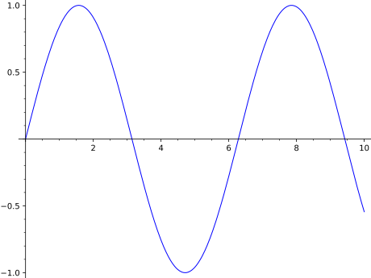sage: P = plot(sin, (0,10), plot_points=10); print(P) Graphics object consisting of 1 graphics primitive sage: len(P[0]) # random output 32 sage: P # render Graphics object consisting of 1 graphics primitive
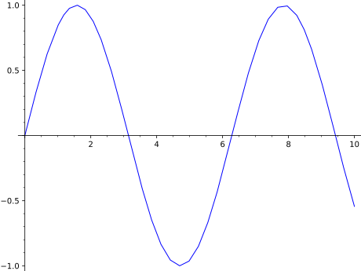We plot with
randomize=False, which makes the initial sample points evenly spaced (hence always the same). Adaptive plotting might insert other points, however, unlessadaptive_recursion=0.sage: p=plot(1, (x,0,3), plot_points=4, randomize=False, adaptive_recursion=0) sage: list(p[0]) [(0.0, 1.0), (1.0, 1.0), (2.0, 1.0), (3.0, 1.0)]
Some colored functions:
sage: plot(sin, 0, 10, color='purple') Graphics object consisting of 1 graphics primitive
sage: plot(sin, 0, 10, color='#ff00ff') Graphics object consisting of 1 graphics primitive
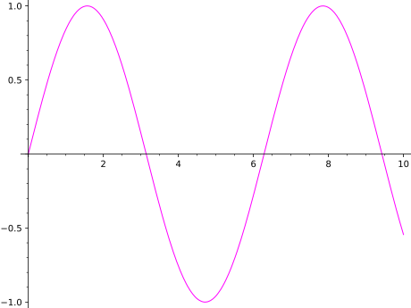We plot several functions together by passing a list of functions as input:
sage: plot([x*exp(-n*x^2)/.4 for n in [1..5]], (0, 2), aspect_ratio=.8) Graphics object consisting of 5 graphics primitives
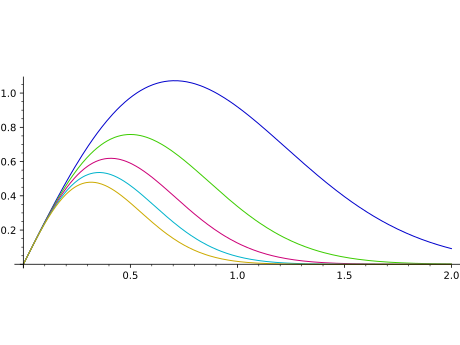By default, color will change from one primitive to the next. This may be controlled by modifying
coloroption:sage: g1 = plot([x*exp(-n*x^2)/.4 for n in [1..3]], (0, 2), color='blue', aspect_ratio=.8); g1 Graphics object consisting of 3 graphics primitives sage: g2 = plot([x*exp(-n*x^2)/.4 for n in [1..3]], (0, 2), color=['red','red','green'], linestyle=['-','--','-.'], aspect_ratio=.8); g2 Graphics object consisting of 3 graphics primitives
We can also build a plot step by step from an empty plot:
sage: a = plot([]); a # passing an empty list returns an empty plot (Graphics() object) Graphics object consisting of 0 graphics primitives sage: a += plot(x**2); a # append another plot Graphics object consisting of 1 graphics primitive
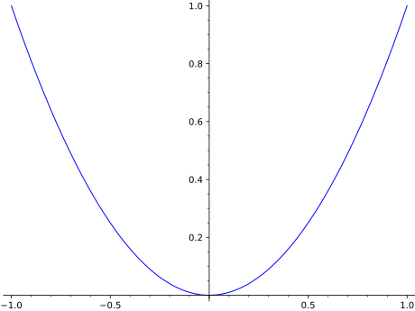sage: a += plot(x**3); a # append yet another plot Graphics object consisting of 2 graphics primitives
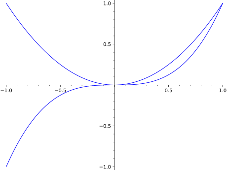The function \(\sin(1/x)\) wiggles wildly near \(0\). Sage adapts to this and plots extra points near the origin.
sage: plot(sin(1/x), (x, -1, 1)) Graphics object consisting of 1 graphics primitive
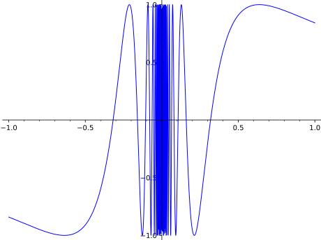Via the matplotlib library, Sage makes it easy to tell whether a graph is on both sides of both axes, as the axes only cross if the origin is actually part of the viewing area:
sage: plot(x^3,(x,0,2)) # this one has the origin Graphics object consisting of 1 graphics primitive
sage: plot(x^3,(x,1,2)) # this one does not Graphics object consisting of 1 graphics primitive
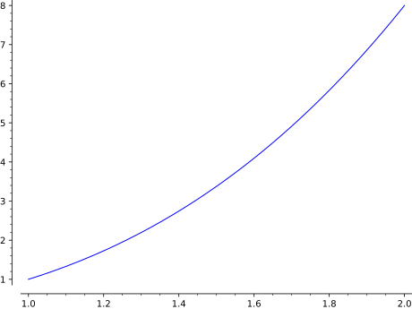Another thing to be aware of with axis labeling is that when the labels have quite different orders of magnitude or are very large, scientific notation (the \(e\) notation for powers of ten) is used:
sage: plot(x^2,(x,480,500)) # this one has no scientific notation Graphics object consisting of 1 graphics primitive
sage: plot(x^2,(x,300,500)) # this one has scientific notation on y-axis Graphics object consisting of 1 graphics primitive
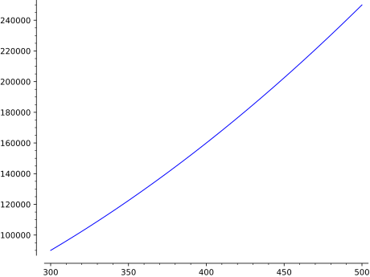You can put a legend with
legend_label(the legend is only put once in the case of multiple functions):sage: plot(exp(x), 0, 2, legend_label='$e^x$') Graphics object consisting of 1 graphics primitive
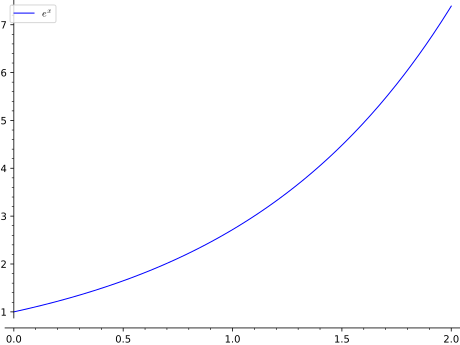Sage understands TeX, so these all are slightly different, and you can choose one based on your needs:
sage: plot(sin, legend_label='sin') Graphics object consisting of 1 graphics primitive
sage: plot(sin, legend_label='$sin$') Graphics object consisting of 1 graphics primitive
sage: plot(sin, legend_label=r'$\sin$') Graphics object consisting of 1 graphics primitive
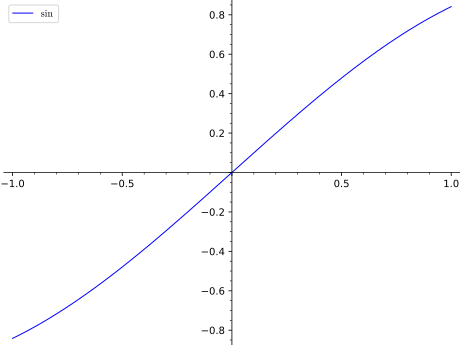It is possible to use a different color for the text of each label:
sage: p1 = plot(sin, legend_label='sin', legend_color='red') sage: p2 = plot(cos, legend_label='cos', legend_color='green') sage: p1 + p2 Graphics object consisting of 2 graphics primitives
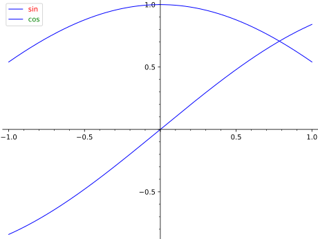Prior to trac ticket #19485, legends by default had a shadowless gray background. This behavior can be recovered by setting the legend options on your plot object:
sage: p = plot(sin(x), legend_label=r'$\sin(x)$') sage: p.set_legend_options(back_color=(0.9,0.9,0.9), shadow=False)
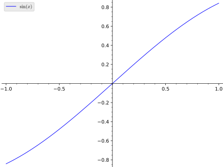If \(X\) is a list of Sage objects and
legend_labelis ‘automatic’, then Sage will create labels for each function according to their internal representation:sage: plot([sin(x), tan(x), 1-x^2], legend_label='automatic') Graphics object consisting of 3 graphics primitives
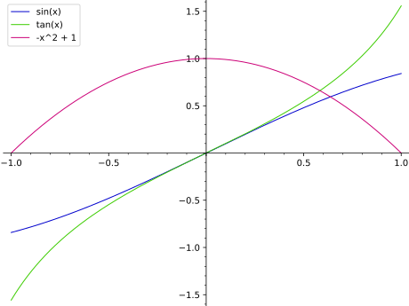If
legend_labelis any single string other than ‘automatic’, then it is repeated for all members of \(X\):sage: plot([sin(x), tan(x)], color='blue', legend_label='trig') Graphics object consisting of 2 graphics primitives
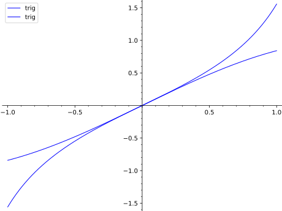Note that the independent variable may be omitted if there is no ambiguity:
sage: plot(sin(1.0/x), (-1, 1)) Graphics object consisting of 1 graphics primitive
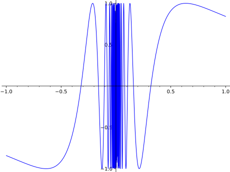Plotting in logarithmic scale is possible for 2D plots. There are two different syntaxes supported:
sage: plot(exp, (1, 10), scale='semilogy') # log axis on vertical Graphics object consisting of 1 graphics primitive
sage: plot_semilogy(exp, (1, 10)) # same thing Graphics object consisting of 1 graphics primitive
sage: plot_loglog(exp, (1, 10)) # both axes are log Graphics object consisting of 1 graphics primitive
sage: plot(exp, (1, 10), scale='loglog', base=2) # long time # base of log is 2 Graphics object consisting of 1 graphics primitive
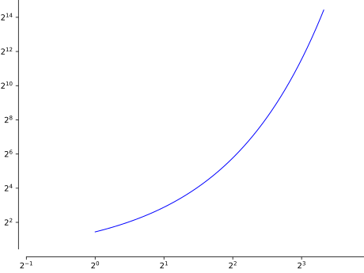We can also change the scale of the axes in the graphics just before displaying:
sage: G = plot(exp, 1, 10) # long time sage: G.show(scale=('semilogy', 2)) # long time
The algorithm used to insert extra points is actually pretty simple. On the picture drawn by the lines below:
sage: p = plot(x^2, (-0.5, 1.4)) + line([(0,0), (1,1)], color='green') sage: p += line([(0.5, 0.5), (0.5, 0.5^2)], color='purple') sage: p += point(((0, 0), (0.5, 0.5), (0.5, 0.5^2), (1, 1)), color='red', pointsize=20) sage: p += text('A', (-0.05, 0.1), color='red') sage: p += text('B', (1.01, 1.1), color='red') sage: p += text('C', (0.48, 0.57), color='red') sage: p += text('D', (0.53, 0.18), color='red') sage: p.show(axes=False, xmin=-0.5, xmax=1.4, ymin=0, ymax=2)
You have the function (in blue) and its approximation (in green) passing through the points A and B. The algorithm finds the midpoint C of AB and computes the distance between C and D. If that distance exceeds the
adaptive_tolerancethreshold (relative to the size of the initial plot subintervals), the point D is added to the curve. If D is added to the curve, then the algorithm is applied recursively to the points A and D, and D and B. It is repeatedadaptive_recursiontimes (5, by default).The actual sample points are slightly randomized, so the above plots may look slightly different each time you draw them.
We draw the graph of an elliptic curve as the union of graphs of 2 functions.
sage: def h1(x): return abs(sqrt(x^3 - 1)) sage: def h2(x): return -abs(sqrt(x^3 - 1)) sage: P = plot([h1, h2], 1,4) sage: P # show the result Graphics object consisting of 2 graphics primitives
It is important to mention that when we draw several graphs at the same time, parameters
xmin,xmax,yminandymaxare just passed directly to theshowprocedure. In fact, these parameters would be overwritten:sage: p=plot(x^3, x, xmin=-1, xmax=1,ymin=-1, ymax=1) sage: q=plot(exp(x), x, xmin=-2, xmax=2, ymin=0, ymax=4) sage: (p+q).show()
As a workaround, we can perform the trick:
sage: p1 = line([(a,b) for a,b in zip(p[0].xdata,p[0].ydata) if (b>=-1 and b<=1)]) sage: q1 = line([(a,b) for a,b in zip(q[0].xdata,q[0].ydata) if (b>=0 and b<=4)]) sage: (p1+q1).show()
We can also directly plot the elliptic curve:
sage: E = EllipticCurve([0,-1]) sage: plot(E, (1, 4), color=hue(0.6)) Graphics object consisting of 1 graphics primitive
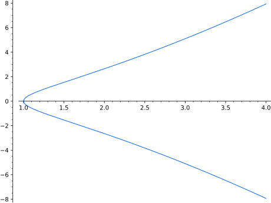We can change the line style as well:
sage: plot(sin(x), (x, 0, 10), linestyle='-.') Graphics object consisting of 1 graphics primitive
If we have an empty linestyle and specify a marker, we can see the points that are actually being plotted:
sage: plot(sin(x), (x,0,10), plot_points=20, linestyle='', marker='.') Graphics object consisting of 1 graphics primitive
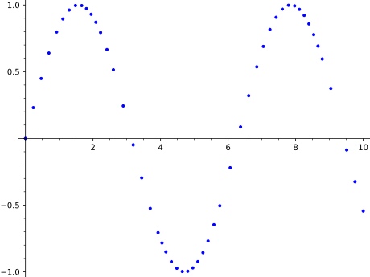The marker can be a TeX symbol as well:
sage: plot(sin(x), (x,0,10), plot_points=20, linestyle='', marker=r'$\checkmark$') Graphics object consisting of 1 graphics primitive
Sage currently ignores points that cannot be evaluated
sage: set_verbose(-1) sage: plot(-x*log(x), (x,0,1)) # this works fine since the failed endpoint is just skipped. Graphics object consisting of 1 graphics primitive sage: set_verbose(0)
This prints out a warning and plots where it can (we turn off the warning by setting the verbose mode temporarily to -1.)
sage: set_verbose(-1) sage: plot(x^(1/3), (x,-1,1)) Graphics object consisting of 1 graphics primitive sage: set_verbose(0)
Plotting the real cube root function for negative input requires avoiding the complex numbers one would usually get. The easiest way is to use absolute value:
sage: plot(sign(x)*abs(x)^(1/3), (x,-1,1)) Graphics object consisting of 1 graphics primitive
We can also use the following:
sage: plot(sign(x)*(x*sign(x))^(1/3), (x,-4,4)) Graphics object consisting of 1 graphics primitive
A way that points to how to plot other functions without symbolic variants is using lambda functions:
sage: plot(lambda x : RR(x).nth_root(3), (x,-1, 1)) Graphics object consisting of 1 graphics primitive
We can detect the poles of a function:
sage: plot(gamma, (-3, 4), detect_poles=True).show(ymin=-5, ymax=5)
We draw the Gamma-Function with its poles highlighted:
sage: plot(gamma, (-3, 4), detect_poles='show').show(ymin=-5, ymax=5)
The basic options for filling a plot:
sage: p1 = plot(sin(x), -pi, pi, fill='axis') sage: p2 = plot(sin(x), -pi, pi, fill='min', fillalpha=1) sage: p3 = plot(sin(x), -pi, pi, fill='max') sage: p4 = plot(sin(x), -pi, pi, fill=(1-x)/3, fillcolor='blue', fillalpha=.2) sage: graphics_array([[p1, p2], [p3, p4]]).show(frame=True, axes=False) # long time
The basic options for filling a list of plots:
sage: (f1, f2) = x*exp(-1*x^2)/.35, x*exp(-2*x^2)/.35 sage: p1 = plot([f1, f2], -pi, pi, fill={1: [0]}, fillcolor='blue', fillalpha=.25, color='blue') sage: p2 = plot([f1, f2], -pi, pi, fill={0: x/3, 1:[0]}, color=['blue']) sage: p3 = plot([f1, f2], -pi, pi, fill=[0, [0]], fillcolor=['orange','red'], fillalpha=1, color={1: 'blue'}) sage: p4 = plot([f1, f2], (x,-pi, pi), fill=[x/3, 0], fillcolor=['grey'], color=['red', 'blue']) sage: graphics_array([[p1, p2], [p3, p4]]).show(frame=True, axes=False) # long time
A example about the growth of prime numbers:
sage: plot(1.13*log(x), 1, 100, fill=lambda x: nth_prime(x)/floor(x), fillcolor='red') Graphics object consisting of 2 graphics primitives
Fill the area between a function and its asymptote:
sage: f = (2*x^3+2*x-1)/((x-2)*(x+1)) sage: plot([f, 2*x+2], -7,7, fill={0: [1]}, fillcolor='#ccc').show(ymin=-20, ymax=20)
Fill the area between a list of functions and the x-axis:
sage: def b(n): return lambda x: bessel_J(n, x) sage: plot([b(n) for n in [1..5]], 0, 20, fill='axis') Graphics object consisting of 10 graphics primitives
Note that to fill between the ith and jth functions, you must use the dictionary key-value syntax
i:[j]; using key-value pairs likei:jwill fill between the ith function and the line y=j:sage: def b(n): return lambda x: bessel_J(n, x) + 0.5*(n-1) sage: plot([b(c) for c in [1..5]], 0, 20, fill={i:[i-1] for i in [1..4]}, color={i:'blue' for i in [1..5]}, aspect_ratio=3, ymax=3) Graphics object consisting of 9 graphics primitives sage: plot([b(c) for c in [1..5]], 0, 20, fill={i:i-1 for i in [1..4]}, color='blue', aspect_ratio=3) # long time Graphics object consisting of 9 graphics primitives
Extra options will get passed on to
show(), as long as they are valid:sage: plot(sin(x^2), (x, -3, 3), title=r'Plot of $\sin(x^2)$', axes_labels=['$x$','$y$']) # These labels will be nicely typeset Graphics object consisting of 1 graphics primitive
sage: plot(sin(x^2), (x, -3, 3), title='Plot of sin(x^2)', axes_labels=['x','y']) # These will not Graphics object consisting of 1 graphics primitive
sage: plot(sin(x^2), (x, -3, 3), axes_labels=['x','y'], axes_labels_size=2.5) # Large axes labels (w.r.t. the tick marks) Graphics object consisting of 1 graphics primitive
sage: plot(sin(x^2), (x, -3, 3), figsize=[8,2]) Graphics object consisting of 1 graphics primitive sage: plot(sin(x^2), (x, -3, 3)).show(figsize=[8,2]) # These are equivalent
This includes options for custom ticks and formatting. See documentation for
show()for more details.sage: plot(sin(pi*x), (x, -8, 8), ticks=[[-7,-3,0,3,7],[-1/2,0,1/2]]) Graphics object consisting of 1 graphics primitive
sage: plot(2*x+1,(x,0,5),ticks=[[0,1,e,pi,sqrt(20)],2],tick_formatter="latex") Graphics object consisting of 1 graphics primitive
This is particularly useful when setting custom ticks in multiples of \(pi\).
sage: plot(sin(x),(x,0,2*pi),ticks=pi/3,tick_formatter=pi) Graphics object consisting of 1 graphics primitive
You can even have custom tick labels along with custom positioning.
sage: plot(x**2, (x,0,3), ticks=[[1,2.5],[0.5,1,2]], tick_formatter=[["$x_1$","$x_2$"],["$y_1$","$y_2$","$y_3$"]]) Graphics object consisting of 1 graphics primitive
You can force Type 1 fonts in your figures by providing the relevant option as shown below. This also requires that LaTeX, dvipng and Ghostscript be installed:
sage: plot(x, typeset='type1') # optional - latex Graphics object consisting of 1 graphics primitive
A example with excluded values:
sage: plot(floor(x), (x, 1, 10), exclude=[1..10]) Graphics object consisting of 11 graphics primitives
We exclude all points where
PrimePimakes a jump:sage: jumps = [n for n in [1..100] if prime_pi(n) != prime_pi(n-1)] sage: plot(lambda x: prime_pi(x), (x, 1, 100), exclude=jumps) Graphics object consisting of 26 graphics primitives
Excluded points can also be given by an equation:
sage: g(x) = x^2-2*x-2 sage: plot(1/g(x), (x, -3, 4), exclude=g(x)==0, ymin=-5, ymax=5) # long time Graphics object consisting of 3 graphics primitives
excludeanddetect_polescan be used together:sage: f(x) = (floor(x)+0.5) / (1-(x-0.5)^2) sage: plot(f, (x, -3.5, 3.5), detect_poles='show', exclude=[-3..3], ymin=-5, ymax=5) Graphics object consisting of 12 graphics primitives
Regions in which the plot has no values are automatically excluded. The regions thus excluded are in addition to the exclusion points present in the
excludekeyword argument.:sage: set_verbose(-1) sage: plot(arcsec, (x, -2, 2)) # [-1, 1] is excluded automatically Graphics object consisting of 2 graphics primitives
sage: plot(arcsec, (x, -2, 2), exclude=[1.5]) # x=1.5 is also excluded Graphics object consisting of 3 graphics primitives
sage: plot(arcsec(x/2), -2, 2) # plot should be empty; no valid points Graphics object consisting of 0 graphics primitives sage: plot(sqrt(x^2-1), -2, 2) # [-1, 1] is excluded automatically Graphics object consisting of 2 graphics primitives
sage: plot(arccsc, -2, 2) # [-1, 1] is excluded automatically Graphics object consisting of 2 graphics primitives sage: set_verbose(0)
-
sage.plot.plot.plot_loglog(funcs, base=10, *args, **kwds)¶ Plot graphics in ‘loglog’ scale, that is, both the horizontal and the vertical axes will be in logarithmic scale.
INPUT:
base– (default: 10) the base of the logarithm. This must be greater than 1. The base can be also given as a list or tuple(basex, basey).basexsets the base of the logarithm along the horizontal axis andbaseysets the base along the vertical axis.funcs– any Sage object which is acceptable to theplot().
For all other inputs, look at the documentation of
plot().EXAMPLES:
sage: plot_loglog(exp, (1,10)) # plot in loglog scale with base 10 Graphics object consisting of 1 graphics primitive
sage: plot_loglog(exp, (1,10), base=2.1) # long time # with base 2.1 on both axes Graphics object consisting of 1 graphics primitive
sage: plot_loglog(exp, (1,10), base=(2,3)) Graphics object consisting of 1 graphics primitive
-
sage.plot.plot.plot_semilogx(funcs, base=10, *args, **kwds)¶ Plot graphics in ‘semilogx’ scale, that is, the horizontal axis will be in logarithmic scale.
INPUT:
base– (default: 10) the base of the logarithm. This must be greater than 1.funcs– any Sage object which is acceptable to theplot().
For all other inputs, look at the documentation of
plot().EXAMPLES:
sage: plot_semilogx(exp, (1,10)) # long time # plot in semilogx scale, base 10 Graphics object consisting of 1 graphics primitive
sage: plot_semilogx(exp, (1,10), base=2) # with base 2 Graphics object consisting of 1 graphics primitive

-
sage.plot.plot.plot_semilogy(funcs, base=10, *args, **kwds)¶ Plot graphics in ‘semilogy’ scale, that is, the vertical axis will be in logarithmic scale.
INPUT:
base– (default: 10) the base of the logarithm. This must be greater than 1.funcs– any Sage object which is acceptable to theplot().
For all other inputs, look at the documentation of
plot().EXAMPLES:
sage: plot_semilogy(exp, (1,10)) # long time # plot in semilogy scale, base 10 Graphics object consisting of 1 graphics primitive
sage: plot_semilogy(exp, (1,10), base=2) # long time # with base 2 Graphics object consisting of 1 graphics primitive
-
sage.plot.plot.polar_plot(funcs, aspect_ratio=1.0, *args, **kwds)¶ polar_plottakes a single function or a list or tuple of functions and plots them with polar coordinates in the given domain.This function is equivalent to the
plot()command with the optionspolar=Trueandaspect_ratio=1. For more help on options, see the documentation forplot().INPUT:
funcs- a function- other options are passed to plot
EXAMPLES:
Here is a blue 8-leaved petal:
sage: polar_plot(sin(5*x)^2, (x, 0, 2*pi), color='blue') Graphics object consisting of 1 graphics primitive
A red figure-8:
sage: polar_plot(abs(sqrt(1 - sin(x)^2)), (x, 0, 2*pi), color='red') Graphics object consisting of 1 graphics primitive
A green limacon of Pascal:
sage: polar_plot(2 + 2*cos(x), (x, 0, 2*pi), color=hue(0.3)) Graphics object consisting of 1 graphics primitive
Several polar plots:
sage: polar_plot([2*sin(x), 2*cos(x)], (x, 0, 2*pi)) Graphics object consisting of 2 graphics primitives
A filled spiral:
sage: polar_plot(sqrt, 0, 2 * pi, fill=True) Graphics object consisting of 2 graphics primitives
Fill the area between two functions:
sage: polar_plot(cos(4*x) + 1.5, 0, 2*pi, fill=0.5 * cos(4*x) + 2.5, fillcolor='orange') Graphics object consisting of 2 graphics primitives
Fill the area between several spirals:
sage: polar_plot([(1.2+k*0.2)*log(x) for k in range(6)], 1, 3 * pi, fill={0: [1], 2: [3], 4: [5]}) Graphics object consisting of 9 graphics primitives
Exclude points at discontinuities:
sage: polar_plot(log(floor(x)), (x, 1, 4*pi), exclude=[1..12]) Graphics object consisting of 12 graphics primitives
-
sage.plot.plot.reshape(v, n, m)¶ Helper function for creating graphics arrays.
The input array is flattened and turned into an \(n imes m\) array, with blank graphics object padded at the end, if necessary.
INPUT:
v- a list of lists or tuplesn, m- integers
OUTPUT:
A list of lists of graphics objects
EXAMPLES:
sage: L = [plot(sin(k*x),(x,-pi,pi)) for k in range(10)] sage: graphics_array(L,3,4) # long time (up to 4s on sage.math, 2012) Graphics Array of size 3 x 4
sage: M = [[plot(sin(k*x),(x,-pi,pi)) for k in range(3)],[plot(cos(j*x),(x,-pi,pi)) for j in [3..5]]] sage: graphics_array(M,6,1) # long time (up to 4s on sage.math, 2012) Graphics Array of size 6 x 1
-
sage.plot.plot.to_float_list(v)¶ Given a list or tuple or iterable v, coerce each element of v to a float and make a list out of the result.
EXAMPLES:
sage: from sage.plot.plot import to_float_list sage: to_float_list([1,1/2,3]) [1.0, 0.5, 3.0]
-
sage.plot.plot.xydata_from_point_list(points)¶ Returns two lists (xdata, ydata), each coerced to a list of floats, which correspond to the x-coordinates and the y-coordinates of the points.
The points parameter can be a list of 2-tuples or some object that yields a list of one or two numbers.
This function can potentially be very slow for large point sets.